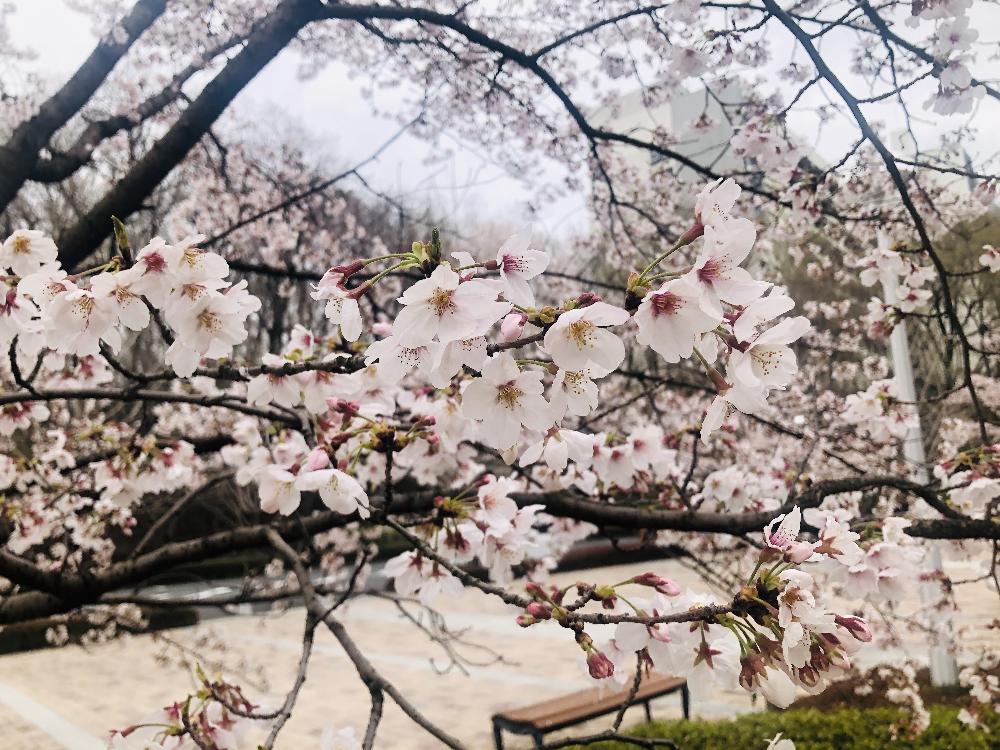
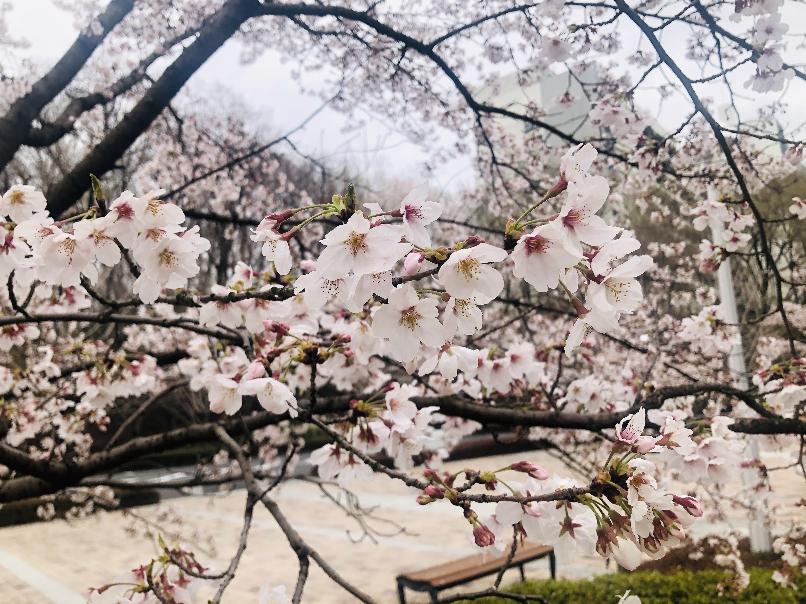
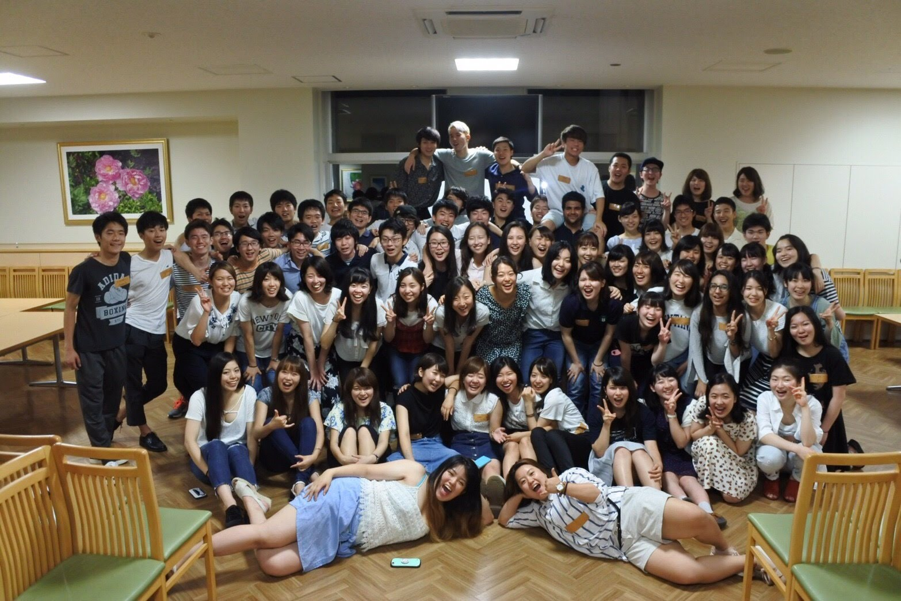
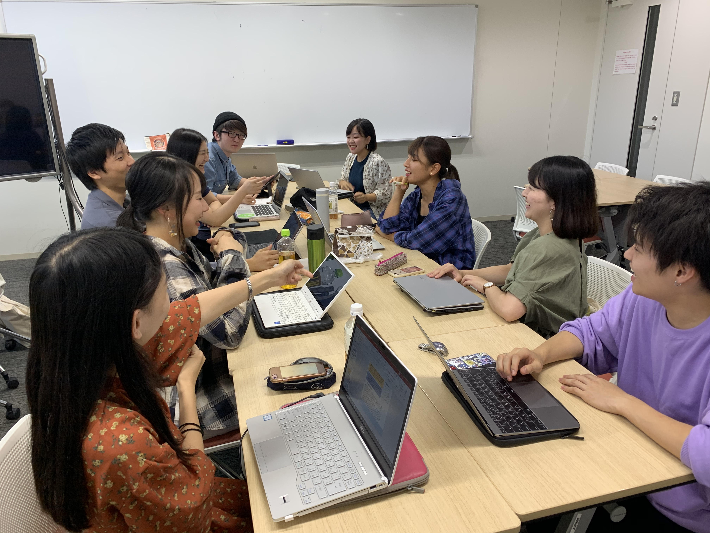
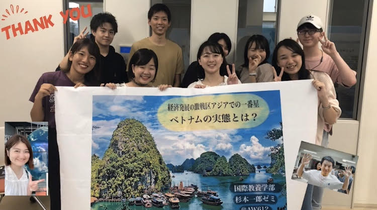
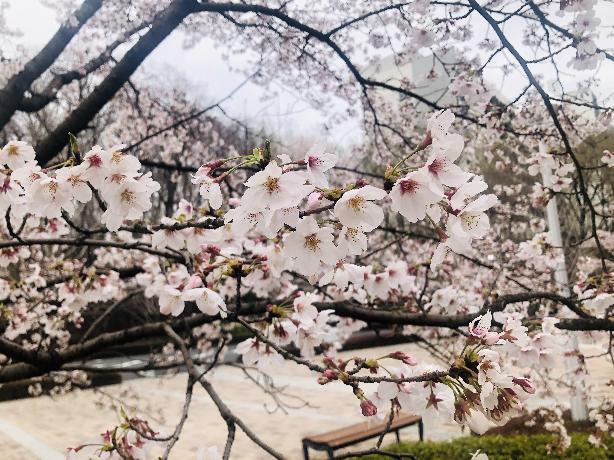
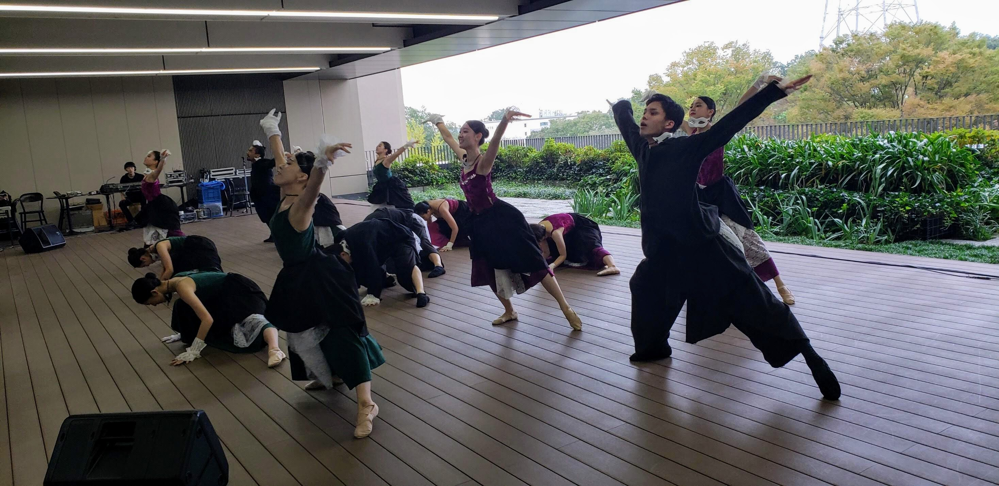
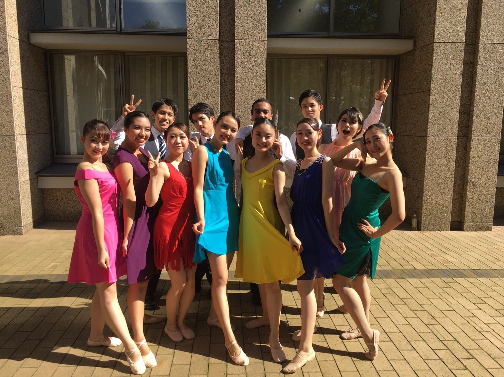

- 趣味
- 写真をとること
私が大学構内で取ったお気に入りの写真たち
- 紅葉ライトアップ
- 紅葉
- 桜
 

学部の授業はすべて英語で実施され、入学当初は授業についていくのに必死でした。留学を経て大学２年の後期から、英語を用いて政治・経済・哲学・社会学など専門分野の学びが始まり、ようやく学びの面白さを感じるようになりました。それでも大量の英文のリーディングや課題に奮闘する日々は変わりません！では、なぜここまでいろんな試練を乗り越えてこられたのか？それは共に目標に向かって走る仲間がいたからです！後１年もない大学生活ですが、創価大学で学べるだけ学び力をつけたいと思います！
優秀で努力家の仲間たちと切磋琢磨しながら学んできました！大学祭では、飛躍的な経済成長を遂げるベトナムに関する研究を展示にまとめて発表しました。現在は卒業論文執筆に力を注いでいます。個人執筆且つ統計的分析手法を用いた内容ということでわくわくしています。４年間の学びの集大成として楽しく挑戦していきたいと思います！
 私が大学構内で取ったお気に入りの写真たち

中高で新体操をやっていたということもあり、自分の想いを自由に表現するモダンダンスに惹かれ入部しました。
留学生の部員と共にダンスを創作したり、沢山の先輩方に支えて頂きながら、大学祭で多くの人にダンスで感動を伝えられたことは良い思い出です。
 